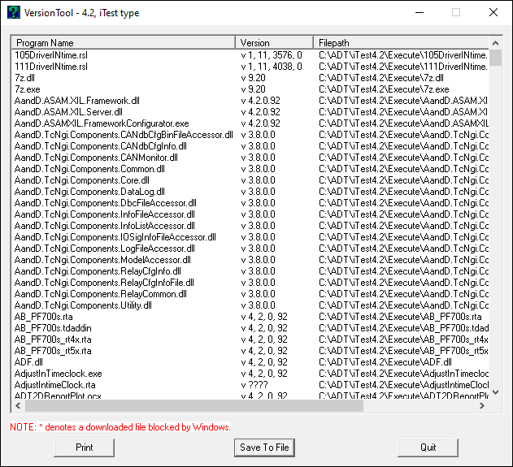
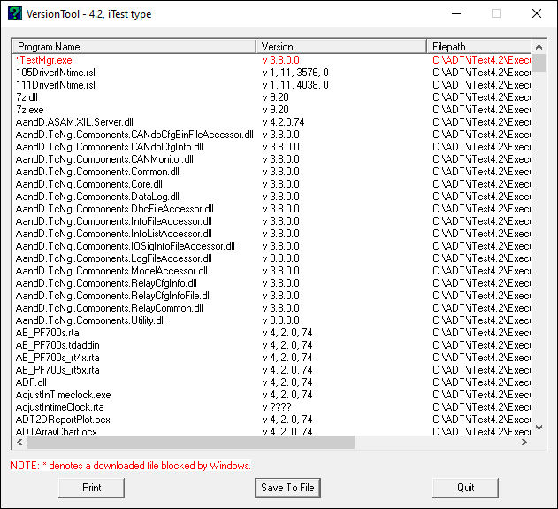
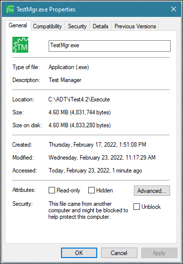

iTest User's Guide
The VersionTool utility creates a listing of the file contents of $EXECUTEDIR including the first level of the following subfolders: Panels, Dialogs, and Python34. This listing includes the name of each file along with its file version and filepath.
VersionTool

To save this listing, click the Save To File button at the bottom of the screen. In the Save As dialog box, navigate to the area that you wish to save and enter a name and extension (normally .txt) in the File Name field. Since there is not a list of extensions in the Save as Type field, you'll need to combine it with the file name.
If a file is blocked by Windows, then the VersionTool utility indicates which file was blocked. The blocked files are listed at the top of the list in red font. This will only flag files that are blocked by Windows due to where the files originate from. This will not identify files that are blocked due to anti-virus software or some other mechanism.
Blocked Files

The following screenshot demonstrates how the file's Properties dialog will include a Security notation stating that the file is blocked.
Example Properties from a Blocked File
